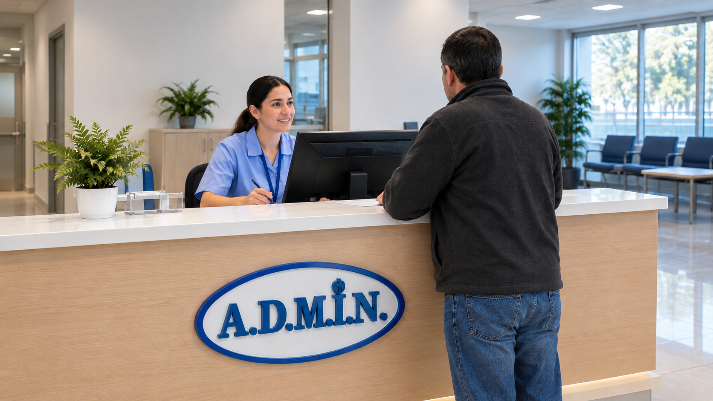

Nuestros Servicios Principales
- Gestión de Pacientes e Historiales: Accede a documentaciones digitalizadas e ingresa de forma rápida mediante códigos QR.
- Control de Traslados: Seguimiento en tiempo real por GPS de ambulancias, choferes y traslados.
- Receta Digital: Emisión y gestión de recetas electrónicas enviadas o vinculadas a la farmacia más cercana para agilizar el retiro de medicamentos.
- Evaluación y Encuestas: Encuestas interactivas para que los pacientes valoren la atención recibida y ayuden a mejorar la calidad del servicio.
- Gestión de Recursos: Control optimizado y seguimiento de insumos para garantizar la disponibilidad de materiales en el hospital.

Contacto
- Dirección: 19 de Abril 1234 - Paysandú, Uruguay
- Horarios: Abierto todos los dias las 24 horas
- Teléfono: 472 34567
- Mail: hospitaladmin@gmail.com.uy